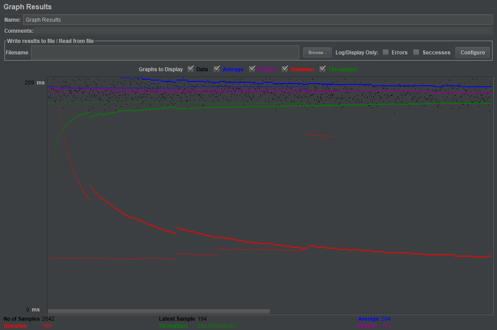
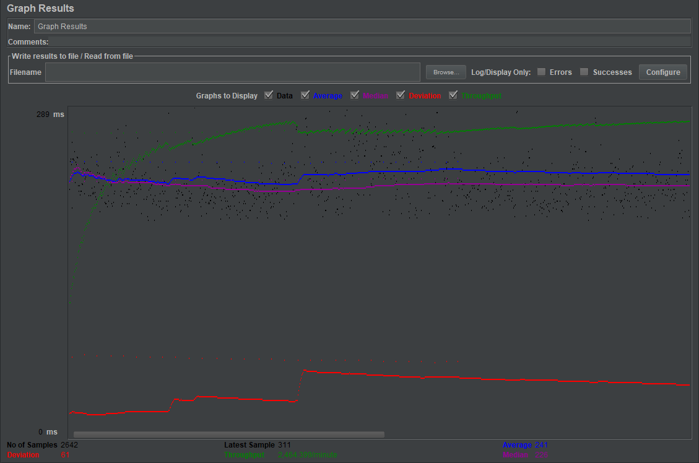
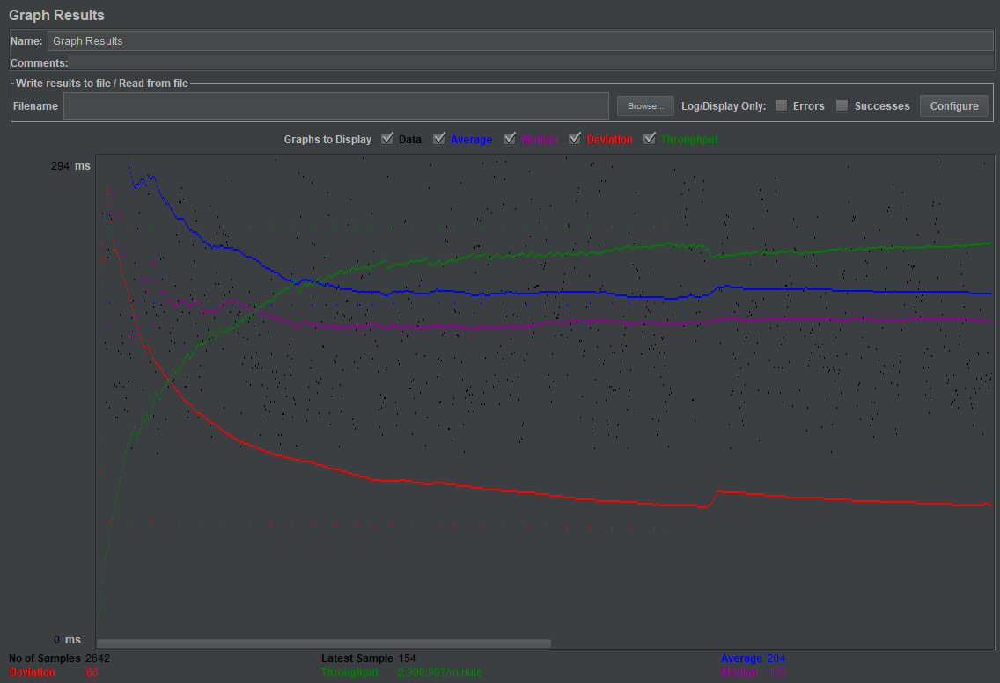
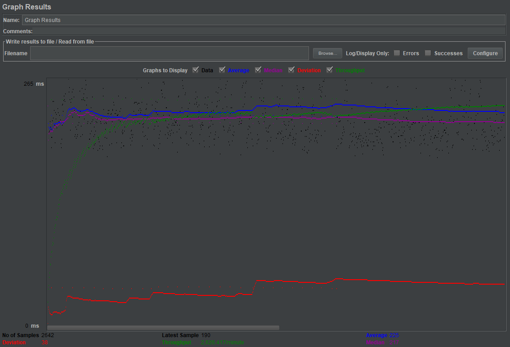
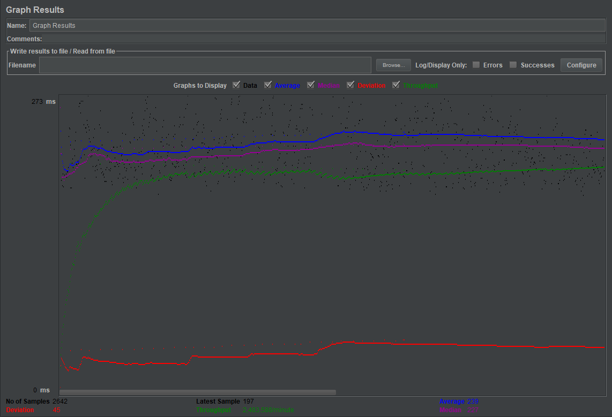
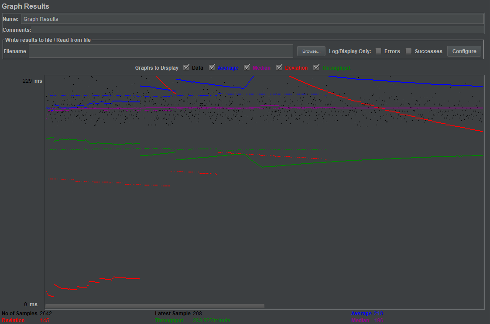
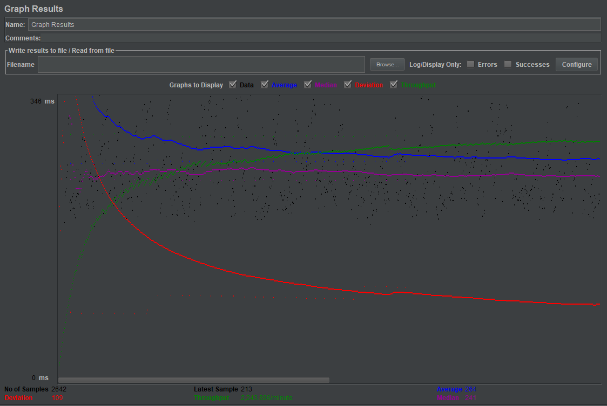
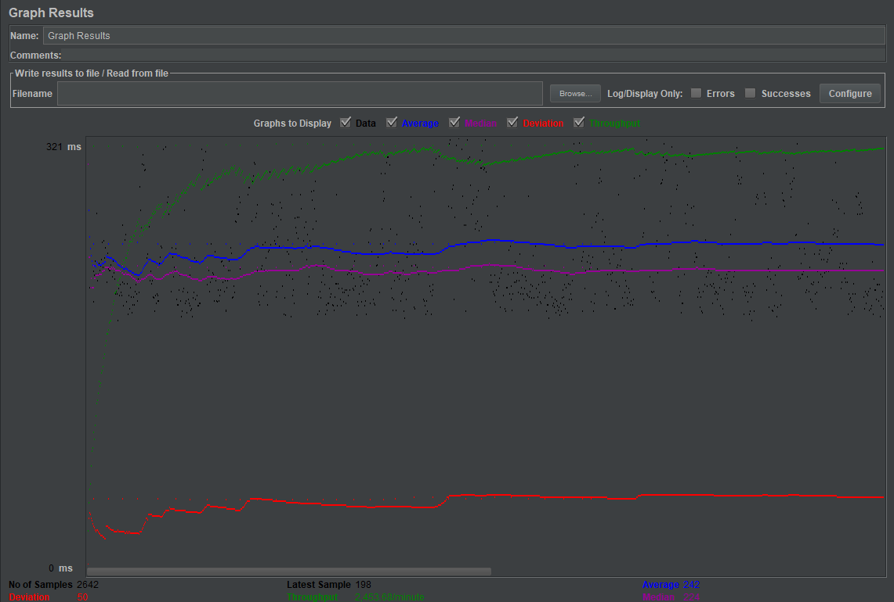
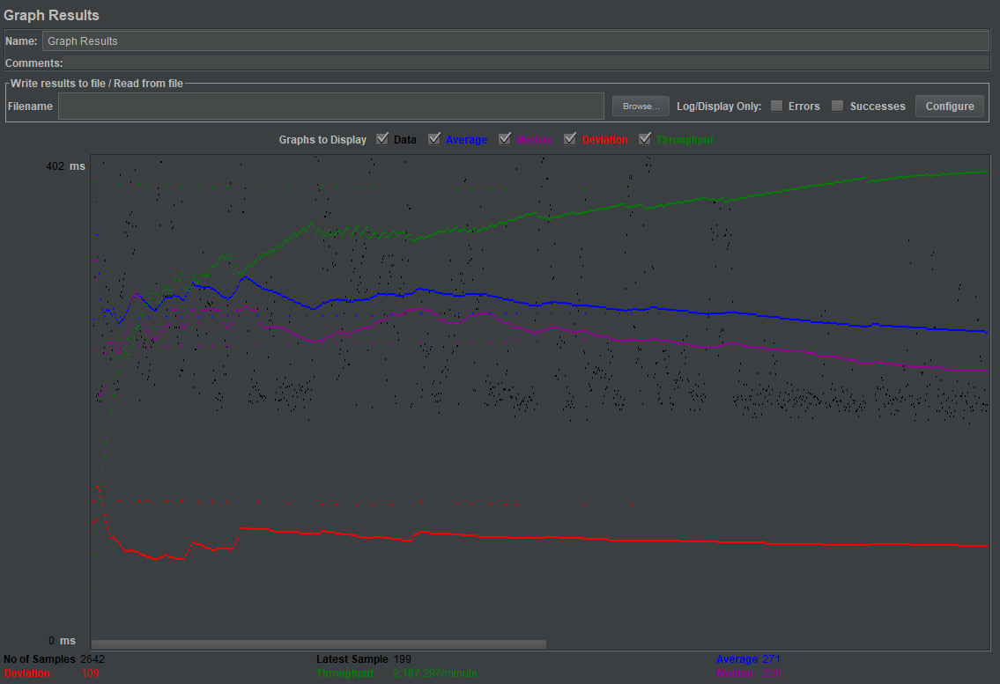

| Single-instance version cases | Graph Results Screenshot | Average Query Time(ms) | Average Search Servlet Time(ms) | Average JDBC Time(ms) | Analysis |
| Case 1: HTTP/1 thread |  | 204 | 8.94740361014383 | 3.9332522626797877 | This had the fastest performance by far, didn't have to manage multiple connections at once since just one user and no re-routing to jdbc connection pool |
| Case 2: HTTP/10 threads |  | 241 | 22.759181578728235 | 11.712905651778955 | Took longer than previous, has to manage multiple connections at once |
| Case 3: HTTPS/10 threads |  | 204 | 33.88420589515518 | 18.131305300529903 | This one was interesting, the request part before the servlet was hit must have been much faster than usual, because it took much longer than the rest to run servlet wise and jdbc wise |
| Case 4: HTTP/10 threads/No prepared statements |  | 225 | 24.846909814155943 | 13.228919939061317 | Compared to standard 10 threads, this is longer servlet wise and jdbc wise, although not by much. It is however shorter on the overall query, I'm not sure why that is. |
| Case 5: HTTP/10 threads/No connection pooling |  | 239 | 31.99425081339894 | 16.33727211619985 | As a whole, this one was longest far overall, still shorter than https in servlet and jdbc time though. Since it has to wait for a connection to free up this is expected behaviour |
| Scaled version cases | Graph Results Screenshot | Average Query Time(ms) | Average Search Servlet Time(ms) | Average JDBC Time(ms) | Analysis |
| Case 1: HTTP/1 thread |  | 210 | 15.719573362225587 | 4.8013016521574565 | What I found interesting was that the scaled versions were still slower overall than the single instance counterpart. It wasn't that much, a few milliseconds difference, but that might be due to having to switch between different jdbc connections over network |
| Case 2: HTTP/10 threads |  | 254 | 30.79191960749432 | 13.374706271385314 | Same case as before, slightly longer than the single instance counterpart, but mirroring behavior and off by a few milliseconds only |
| Case 3: HTTP/10 threads/No prepared statements |  | 242 | 25.952001410673734 | 11.4033365003785 | I think this might just be due to load difference or something, not sure why total time would be off by this amount. Prepared statements might just take a little bit longer to prepare maybe that's why it's slower |
| Case 4: HTTP/10 threads/No connection pooling |  | 271 | 16.7471447993944 | 6.249954126040878 | Much faster on the servlet end, but overall longer on average query time. I'm not entirely sure why this is, more than likely since half queries go to slave and other to master and they're only using localhost for db, it's much faster since they don't communicate that extra little bit over the network. This doesn't account for why the total time is slower though. |